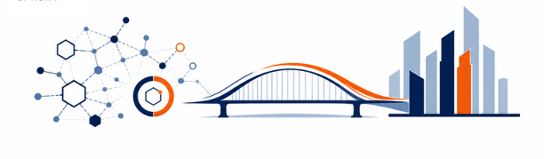

Bridging Israeli health-tech innovation with the people, capital, and markets that scale it.
Get in TouchSenior R&D advisory and technology strategy for health-tech companies navigating product development, engineering organization scaling, and technology transformation. Experienced in building and scaling high-performing global engineering teams, from early-stage startup to enterprise scale. Driving AI-first engineering practices.
Deal flow evaluation, startup assessment, and investment thesis development at the intersection of Israeli deep-tech and global health markets. Direct access to TTO pipelines across leading Israeli academic and clinical institutions.
Go-to-market strategy, commercial model design, and market entry for health-tech founders. Translating technology value into commercial outcomes — from first customer conversations to scalable revenue architecture.
Senior R&D advisory and technology strategy for health-tech companies navigating product development, engineering organization scaling, and technology transformation. Experienced in building and scaling high-performing global engineering teams — from early-stage startup to enterprise scale. Driving AI-first development practices, engineering culture transformation, and execution mindset across distributed organizations.
Deal flow evaluation, startup assessment, and investment thesis development at the intersection of Israeli deep-tech and global health markets. Direct access to TTO pipelines across leading Israeli academic and clinical institutions — including Technion T3, Ramot, Hadassit, Sheba ARC, and Rambam MedTech.
Go-to-market strategy, commercial model design, and market entry for health-tech founders. Translating technology value into commercial outcomes — from first customer conversations to scalable revenue architecture.
A senior technology, product, and venture builder with 25+ years of experience spanning global R&D leadership, corporate innovation, and venture ecosystem development.
Led R&D organizations delivering enterprise healthcare imaging platforms — deployed across hundreds of hospital systems globally, supporting clinical workflows at scale.
Managed multi-year technology programs for Tier-1 operators across North America, Europe, and LATAM — delivering enterprise-scale software platforms with a consistent execution track record.
Built a corporate innovation arm from scratch — establishing active partnerships across leading VCs, hospital innovation centers, and academic tech transfer offices, generating a structured startup collaboration pipeline.
Co-founded and led an early-stage digital health startup — raising pre-seed capital and government grants, launching product, and initiating commercialization with healthcare providers.

Combining deep health-tech domain expertise with hands-on experience in technology scouting, strategic partnerships, and corporate innovation. Former R&D and innovation leader at Philips, VP R&D at DarioHealth a digital therapeutics company, and engineering leader at Amdocs - a global telecommunications enterprise software company. Co-founder of a digital mental health startup. Currently active as Venture Partner at NIT — Northern Israeli Tech Fund, supporting health-tech and deep-tech deal flow and investment evaluation.
Connect on LinkedInWhether you're a founder building in health-tech, an investor exploring the Israeli innovation pipeline, or an organization looking for senior technology and strategy advisory — reach out.
Content on this site does not constitute an offer to sell or solicitation of securities.